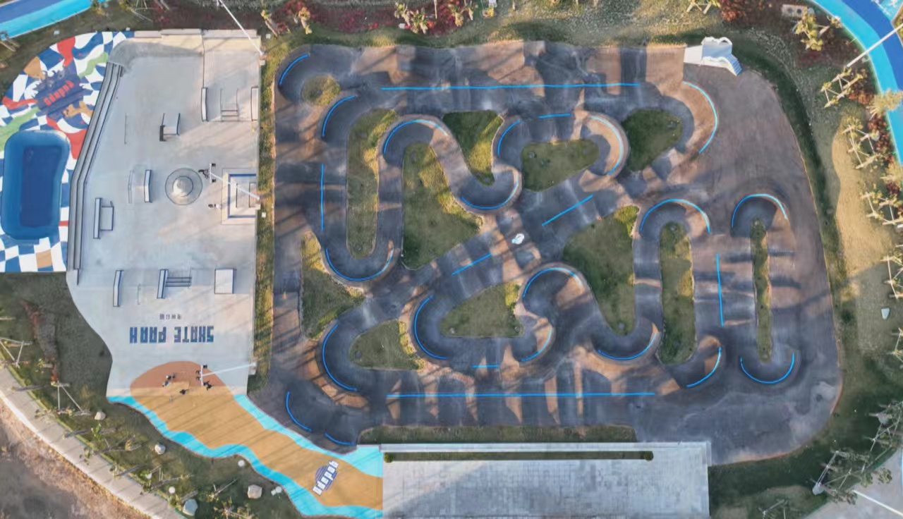
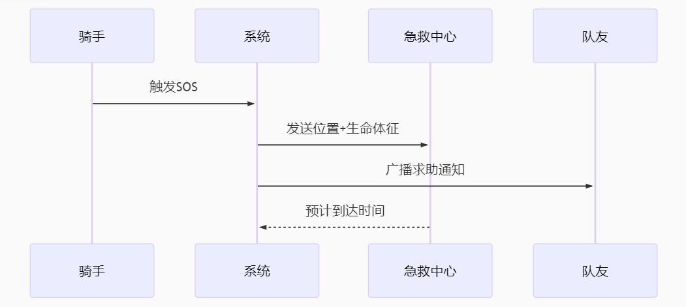
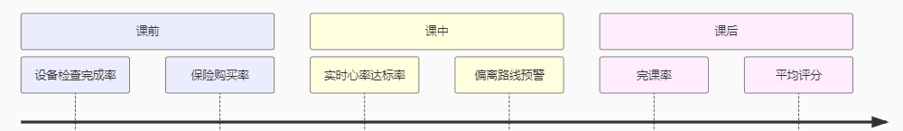

灵境奇骑
|
灵境奇骑 |
 |
| 首页 | 教练与产品 | 智能安全护航 | 平台留言 |
安全合规设计 （１）双重认证：教练需通过人脸识别+资质审核
|
 |
IoT全域骑行守护系统（IoT Holistic Cycling Guardian）——安全防护+健康干预+环境联动的物联网生态 |
|||
| 泵道场地智能点位监测系统（安全防护×训练优化×环境联动） | 云端计算层 | 差异化卖点 | |
场地端：泵道关键点位部署压力传感器（实时监测骑手速度、腾空高度、落地冲击力、骑行圈数）；弯道安装AI摄像头，识别检测危险动作（如重心偏移）；场地内设多个警报装置（通过不同颜色提示与警报音判断危险系数）。 |
场地服务器运行风险预测模型（连接压力传感器、AI摄像头、警报装置），实时分析数据并触发响应，检测到连续高冲击落地时，通提醒“减速防受伤”。 |
ToB场馆：提升场地安全等级，吸引专业训练团队，按数据服务订阅收费（如“动作分析报告”）。 |
|
北极星指标（核心目标） |
指标名称 |
定义 |
目标值 |
数据来源 |
户外骑行事故率 |
单位里程（千公里）内骑行事故（如摔车、碰撞）次数 |
同比下降≥15% |
事故报告系统、GPS轨迹数据 |
训练效率提升率 |
单位时间内（单次训练）骑行者运动表现（速度、动作规范性）提升幅度 |
每月提升≥5% |
穿戴设备传感器、视频分析数据 |
复杂地形通过率 |
山地场景中危险地形（如断崖、落石）安全通过比例 |
≥95% |
无人机扫描数据、骑行轨迹记录 |
业务层指标（按场景分类） ——泵道场景指标 |
| 产品阶段 | 核心技能目标 | 硬件配置 | 能力培养 |
骑行者安全 |
弯道AI摄像头危险动作漏报率 |
＜2% |
视频记录人工复核 |
压力传感器异常检测覆盖率 |
≥95% |
传感器数据完整性检查 |
|
LED警示触发延迟 |
≤30ms |
从检测到触发的系统日志 |
|
训练优化 |
腾空高度标准差 |
≤10cm |
压力传感器数据分析 |
冲击力峰值下降率 |
≥15% |
采纳建议前后数据对比 |
|
动态路径推荐匹配度 |
≥80% |
推荐路径与实际路径重合率 |
地形识别 |
无人机热成像地形分类精度 |
≥97% |
人工标注验证 |
气象数据预测偏差 |
误差≤3% |
与实际气象站数据对比 |
|
LiDAR扫描分辨率 |
≤10cm |
标准地形测试 |
|
设备协同 |
电机功率限制响应时间 |
≤200ms |
系统响应日志 |
无人机返航绕障成功率 |
≥95% |
返航任务记录 |
|
指令同步丢包率 |
＜0.5% |
通信协议日志分析 |
山地场景指标 ——执行层指标（技术实现） |
执行环节 |
具体指标 |
目标值 |
责任人 |
|---|---|---|---|
数据采集 |
泵道压力传感器采样频率 |
≥100Hz |
硬件团队 |
算法处理 |
边缘计算推理延迟 |
≤5ms |
算法团队 |
|---|---|---|---|
设备控制 |
电机功率限制梯度（坡度每增加5%） |
功率下调20% |
控制系统团队 |
用户交互 |
风险预警后用户响应率 |
≥85% |
产品团队 |
数据看板设计 ——用户旅程数据监测 Flink处理峰值：50万条/秒传感器数据 |
 |
|  |
企业网站 |